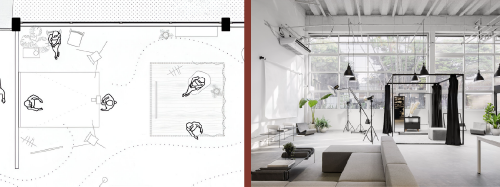
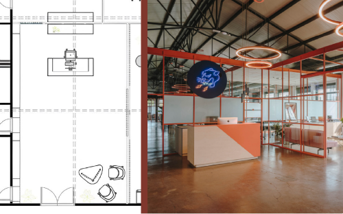
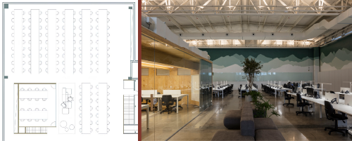
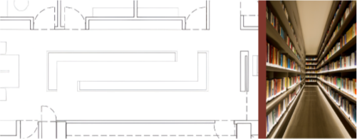

Na unidade curricular Projetar design de interiores residencial, você estudou como os conceitos de leiaute são aplicados no design de interiores de uma casa ou um apartamento, vendo as diversas opções de conexões, dimensionamentos, funcionalidades etc. que podem acontecer. Esses conceitos, aplicados de maneira residencial, também podem ser abordados em ambientes corporativos e escritórios.

Escritório da Organização do Tratado de Cooperação Amazônica (CoDA Arquitetura)
Fonte: França apud ArchDaily (2020b)
Escritório em planta livre. Ao fundo da imagem à esquerda, janelas mostram a cidade. Ao lado da janela, uma série de estações de trabalho branco e cinza com cadeiras pretas. Vegetações estão colocadas em cima da mesa. No teto, vigas em concreto; no piso, trabalho em cerâmica branca e preta.
Aqui, na unidade curricular Projetar design de interiores corporativo, os focos serão escritórios, salas, empresas etc. Muitos dos conceitos vistos anteriormente se repetirão aqui, mas tenha cuidado: em ambientes corporativos, o designer deve compreender os aspectos e os objetivos do local de trabalho (Gibbs, 2009), além de se aprofundar em questões ergonômicas. Nesta unidade curricular, discorre-se novamente sobre ambientes, setores, acessos, fluxos, dimensionamento e funcionalidade.
Na unidade curricular Estruturar concepção projetual de design de interiores, você viu que uma das maneiras de dividir um ambiente corporativo é por meio setores de trabalho conjunto, trabalho individual, espaços de convívio e assim por diante.

Exemplo de setorização – planta baixa do escritório da Organização do Tratado de Cooperação Amazônica
Fonte: Adaptado de ArchDaily (2020a)
Planta baixa de um escritório de médio porte pintada com as cores amarelo (representando espaços de reuniões), vermelho (representando área de trabalho geral), verde (representando diretoria e salas individuais) e azul (representando recepção, circulação e áreas técnicas). A planta baixa é no formato de um retângulo com um vazio central. Na parte superior esquerda, a área de trabalho geral. À direita, diretoria e salas individuais. Próximo ao vazio central, duas grandes salas de reuniões. Entre a sala de reuniões e os outros espaços, fica a circulação geral. Na esquerda/meio da planta baixa fica a recepção, e as áreas técnicas à direita.
Na unidade curricular Estruturar concepção projetual de design de interiores, essa setorização proporcionou um entendimento geral de um funcionamento de um ambiente de trabalho. Meel (2012) aprofunda e atualiza esse conceito, dividindo os ambientes corporativos em três grandes setores:
Logo, a setorização desse mesmo escritório ficaria da seguinte maneira:
Setorização, segundo a classificação de Meel (2012), do escritório da Organização do Tratado de Cooperação Amazônica
Fonte: Adaptado de ArchDaily (2020a)
Planta baixa de um escritório de médio porte pintada com as cores verde (representando espaços de trabalho), amarelo (representando espaços de reunião) e azul (representando espaços de apoio). A planta baixa é no formato de um retângulo com um vazio central. Na parte superior esquerda, a área de trabalho geral. À direita, diretoria e salas individuais. Próximo ao vazio central, duas grandes salas de reuniões. Entre a sala de reuniões e os outros espaços, fica a circulação geral. Na esquerda/meio da planta baixa fica a recepção, e as áreas técnicas à direita.
Os três setores apresentados podem se subdividir em diversos ambientes, como escritório aberto, estação de trabalho, salas de reunião, banheiros, copa e assim por diante. Essa setorização é importante porque funciona para qualquer escala de escritório: uma pequena sala corporativa acabará tendo essas três funções, mesmo que sem uma separação física. Já grandes empresas e escritórios terão esses setores com tamanhos avantajados, divisões específicas e circulações que comunicam os ambientes.

Reflita: faz sentido dividir um escritório de 30 m² em uma sala de reuniões, uma sala individual e uma sala de ambiente de trabalho? Vale a pena setorizar ambientes com paredes quando se quer integração? É possível ter uma sala de reuniões sem fechamento acústico, quando se precisa de privacidade?
No contexto de leiaute corporativo, aborda-se novamente a organização do ambiente em planta baixa. As opções no mundo corporativo são diversas. Estações de trabalho podem ser abertas ou fechadas; salas de reunião podem ser privadas e sérias ou abertas e modernas; ambientes de apoio têm peculiaridades muito específicas.
A seguir, veja como os principais ambientes se organizam com base em sua funcionalidade, além de entender os principais dimensionamentos que devem ser levados em consideração ao projetar cada um desses espaços.
As salas de escritórios podem ter configurações abertas ou fechadas, e cada uma delas pode ter configurações diversas. Aqui, serão abordadas as duas separadamente, trazendo as peculiaridades e as similaridades entre elas.
Salas abertas são espaços coletivos de trabalho, que permitem comunicação frequente entre os usuários e cuja concentração não necessita ser muito aprofundada. Esses ambientes terão pequenas estações de trabalho, porém sem divisórias rígidas, como paredes. As divisões internas, se existirem, serão demarcadas por diferenças entre pisos, forros e acabamentos, porém não são necessárias.
Nesse tipo de ambiente, a configuração das mesas pode ser linear ou em pequenos agrupamentos. Tem como vantagem o uso eficiente do espaço, a flexibilidade espacial (podendo haver alteração de posicionamentos de mesas e móveis facilmente) e a interação entre usuários, pois não há barreiras físicas de altura elevada. Como desvantagens, pode-se citar que a privacidade visual e acústica é limitada, não sendo adequado para conversas confidenciais. Além disso, não há possibilidade de controle do ar-condicionado de maneira individualizada.
Aqui, o leiaute deve garantir a circulação adequada na disposição das mesas: uma vez que provavelmente haverá circulação nas “costas” dos usuários, deve garantir que a mesa fique a aproximadamente 150 cm da parede ou obstrução. É preciso cuidar também para não criar grandes espaços vazios sem uso nesses ambientes. Com relação às alturas, deve-se dar atenção para a ergonomia das mesas e dos equipamentos: mesas devem estar a aproximadamente 75 cm do chão, com o monitor do computador na altura dos olhos.
Leiaute e imagem de sala coletiva de trabalho
Fonte: Adaptado de Guo apud ArchDaily (2023)
Planta baixa e imagem de uma sala coletiva de trabalho com piso em madeira, forro branco com instalações expostas e paredes em branco e madeira. No ambiente, estações de trabalho brancas dispostas em quatro conjuntos, totalizando vinte e dois lugares de trabalho. Ao lado, uma mesa de madeira circunda o pilar de concreto.
Ao contrário das salas abertas, as salas fechadas dos escritórios são espaços de trabalho individual ou para poucas pessoas. Normalmente são privativas, fechadas por paredes ou divisórias, e permitem concentração aprofundada e confidencialidade entre as partes. Também permitem pequenas reuniões ou encontros entre os usuários. Por terem uma metragem menor, têm baixa flexibilidade espacial. A interação dos usuários dentro da sala é total, porém fica restrita a esse ambiente, sem comunicação com as outras salas e os outros ambientes do escritório como um todo. Ao mesmo tempo, a privacidade interna é muito grande. A configuração das mesas dependerá muito da circulação planejada, e o ar-condicionado pode ser controlado de maneira individualizada.
Aqui, o leiaute dependerá bastante da infraestrutura do local: onde tem paredes, tomadas, janelas etc. A predisposição do espaço ditará como será o leiaute. Na distribuição das mesas, é possível que não exista circulação nas “costas”, portanto o espaço entre mesa e obstrução pode ser menor, com aproximadamente 100 cm. Se for um escritório individual, é importante pensar em cadeiras para atendimento ou um pequeno estar para reuniões rápidas. Além disso, o espaço pode ter também uma área de apoio com um pequeno frigobar e/ou uma cafeteira.

Leiaute e imagem de sala fechada de trabalho
Fonte: Adaptado de Antonio apud ArchDaily (2021a)
Planta baixa e imagem de uma sala de trabalho individual com piso em tons de cinza, forro branco com trilhos de iluminação pretos e paredes em cinza. No ambiente, uma mesa orgânica de madeira para uma pessoa trabalhar e atender outras três. Próximas à mesa, duas poltronas pretas com mesa lateral e tapete marrom.
As salas de reuniões dos escritórios contemporâneos têm uma grande variedade de leiaute e mobiliário. Como ideia principal, essas salas permitem encontros profissionais entre grupos de pessoas. Porém, dependendo da quantidade de pessoas e do estilo de reunião, podem ser em ambientes fechados ou abertos, mais ou menos formais, com mesas ou apenas com pufes e assim por diante. Dependerá muito do estilo pretendido e do briefing do cliente.
Segundo Meel (2012), as áreas recomendadas para reuniões são as seguintes:
Essa é uma indicação inicial de metragem, mas é muito importante analisar o fluxo geral do escritório, o briefing, as instalações e as possibilidades de circulação para criar o melhor leiaute possível da sala de reuniões.
Sobre a disposição do mobiliário, dependerá muito do estilo pretendido. Em reuniões mais descontraídas, mesas baixas de centro e pufes ou poltronas leves podem ser suficientes. Porém, em ambientes mais formais, uma mesa de altura de 75 cm e cadeiras confortáveis são imprescindíveis. Caso as divisórias sejam de vidro, a privacidade pode ser alcançada com cortinas e persianas.
Em relação ao leiaute propriamente dito, é importante tomar muito cuidado com a circulação do espaço. Como normalmente é um ambiente fechado por paredes ou divisórias, a circulação por trás das cadeiras é frequente; logo, deve-se pensar em aproximadamente 120 cm da borda da mesa até o ponto de obstrução. Aqui, é preciso lembrar também de que as paredes podem ajudar como ponto de apoio para a projeção de imagens ou tela. Ao mesmo tempo, lembre-se de que não é totalmente necessário que haja uma circulação total em volta da mesa: ela pode estar encostada em uma parede ou divisória, e isso não será um problema.
Leiaute e imagem de sala de reuniões
Fonte: Adaptado de Lima apud ArchDaily (2022a)
Planta baixa e imagem de uma sala de reuniões vista de fora através de esquadria de vidro. Forro em concreto aparente, piso cerâmico cinza a paredes internas brancas e amarelas. No ambiente, uma grande mesa de reuniões para dezesseis pessoas. Sobre a parede amarela, dois monitores para atender às reuniões.
A recepção do escritório é o primeiro contato que os usuários do escritório terão com o ambiente corporativo. É caracterizado por um espaço contíguo ao acesso principal, que pode ser uma porta de entrada, um hall de elevadores ou a rua diretamente. Pode ser mais reservado ou totalmente conectado com os outros ambientes do escritório.
Aqui, o leiaute deve garantir um espaço de espera e de atendimento inicial, proporcionando um local exclusivo para que visitantes e outras pessoas não circulem pelo ambiente geral da empresa.
Quanto a dimensionamento e mobiliários, é preciso ter muito cuidado para que a circulação seja adequada, pois o espaço ficará “menor” quando for necessário abrir a porta. Além disso, deve-se cuidar para que os assentos de espera (cadeiras, poltronas e bancos) não atrapalhem o fluxo geral de entrada e saída do ambiente. Como bancada de atendimento, é possível pensar em móveis com alturas diversas: 75 cm para trabalho de uma pessoa sentada e 90 cm a 110 cm para atendimento de um cliente ou visitante de pé.

Leiaute e imagem de recepção
Fonte: Adaptado de Lopez apud ArchDaily (2022b)
Planta baixa e imagem de uma recepção de escritório. O ambiente é um grande galpão com pé direito alto, divisórias metálicas vazadas laranjas, piso em tom de aço corten. Na recepção, uma bancada de atendimento em tons de laranja e rosa. Em planta baixa aparecem também duas cadeiras com mesa de aproximação.
As circulações nos ambientes de trabalhos devem ser pensadas para uma comunicação eficiente entre os espaços. Muitas vezes, a circulação se “misturará” com um espaço de trabalho ou uma área de apoio. Portanto, é importante que esses espaços permitam boa passagem dos usuários. Segundo Meel (2012), a largura mínima em corredores é de 120 cm.
Em ambientes corporativos, é importante lembrar de que circulações verticais, como elevadores e escadas, podem fazer parte do leiaute do espaço. Além disso, lembre-se de que as circulações devem atender às normas de segurança para casos de incêndio e outras emergências. Finalmente, as circulações devem ser bem planejadas para que não se tornem espaços improdutivos e “roubem” áreas de trabalho e outros apoios. Ou seja, planeje bem a largura desse espaço!

Leiaute e imagem de circulações entre mesas e ambientes
Fonte: Adaptado de Finotti apud ArchDaily (2021b)
Planta baixa e imagem de uma sala coletiva de trabalho demonstrando as circulações do espaço. Forro aparente branco com instalações expostas, paredes em tons de madeira, verde e branco, piso em tons de cinza. Na planta baixa, é possível ver dispostas mesas de maneira linear em seis conjuntos de dezesseis lugares, um espaço fechado para trabalho e uma pequena área de descanso com pufes. Os móveis e o ambiente fechado demarcam as circulações disponíveis do ambiente.
Os banheiros de empresas e escritórios devem ser planejados de acordo com o tamanho e o briefing do local. Muitas vezes, apenas um banheiro é o suficiente. Outras vezes, será necessário ter a separação em mais espaços. Por fim, alguns escritórios necessitarão até de vestiários no local. Tudo dependerá do tamanho da empresa. Portanto, as circulações internas são um ponto importante de atenção.
É importante prestar atenção nos materiais e equipamentos de fácil manutenção, pois o uso normalmente é maior do que de um banheiro residencial. Além disso, lembre-se de que é importante, e muitas vezes obrigatório, haver nos projetos banheiros para pessoas com deficiência. Para ter um conhecimento maior sobre o assunto, pesquise nos conteúdos sobre ergonomia e na NBR 9050.
Em relação ao dimensionamento, lembrar-se do valor de 90 cm na parte superior das pias.
Leiaute e imagem de banheiro
Fonte: Adaptado de Mello apud ArchDaily (2022c)
Planta baixa e imagem de um banheiro com piso em cerâmica cinza, paredes em cerâmica branca tipo metrô e móveis, pedra e forro em branco.
As copas ou áreas de refeições são ambientes interessantes nos escritórios. Assim como os banheiros, eles variarão em área de acordo com o tamanho da empresa. Podem ser apenas uma parede como um ambiente inteiro com mesas. Normalmente, localizam-se próximo às áreas de descompressão e estações de trabalho, permitindo acesso rápido para lanches e alimentação.
Diferentemente de cozinhas residenciais, aqui o foco é em alimentação rápida e semipronta, portanto esqueça o fogão! Geladeira, micro-ondas e cafeteira são os principais eletrodomésticos desse ambiente. Em relação às alturas, devem ser seguidas as que já viu no conteúdo sobre design de interiores residencial: 75 cm para uma mesa de alimentação; 90 cm para bancada de trabalho com pia; e armários altos a partir de 150 cm. A profundidade da bancada continua próxima dos 60 cm.
Leiaute e imagem de copa
Fonte: Adaptado de Netto apud ArchDaily (2021d)
Planta baixa e imagem de uma área de refeições de um escritório. Na foto, à direita, há um armário em madeira com espaço para refrigeradores. Em frente, uma bancada de trabalho com pia. Em seguida, mesas de alturas diversas (75 centímetros e 100 centímetros). O ambiente tem um tamanho avantajado, para atender uma grande empresa.
Os ambientes de descompressão e lazer são espaços coringas em um escritório. Eles permitem socialização, alimentação, reuniões rápidas etc. As possibilidades de leiaute e organização do espaço são diversas. A variedade de estilos é muito grande, assim como o programa de necessidades e o tamanho do espaço. Aqui, assentos confortáveis (sofás, pufes, cadeiras, poltronas etc.) e bancadas de apoio são o ponto forte do ambiente. A circulação pode se misturar com o local, servindo de passagem para outras estações do escritório. Além disso, itens de lazer como videogames, tênis de mesa e jogos diversos ajudam a trazer um ar mais contemporâneo para o espaço.
Outra questão que merece atenção diz respeito às possibilidades de integração dos espaços. Hoje em dia, o estar está muito conectado com outros ambientes. Portanto, é importante pensar na disposição do mobiliário para facilitar o fluxo.
Leiaute e imagem de ambiente de descompressão
Fonte: Adaptado de Lima apud ArchDaily (2022a)
Planta baixa e imagem de um ambiente de descompressão. Piso em cerâmica cinza, forro em concreto aparente. Bancada de alimentação e pufes rosas geométricos em alturas diversas completam o espaço.
Finalmente, você verá as peculiaridades dos diferentes escritórios que existem na atualidade. Por exemplo, um espaço de biblioteca pode fazer sentido em um escritório de advocacia, mas será que ele é necessário em outros ambientes? Uma cabine individual para telecomunicações pode fazer sentido em uma empresa grande, mas será que deve ser projetada em um pequeno escritório de design de interiores? Um espaço para fotografias é um espaço muito específico, mas que pode aparecer em determinados escritórios, por exemplo.
Os ambientes específicos terão um leiaute muito particular, pois esses locais normalmente prezam pela eficiência e funcionalidade. Preste atenção nas diferentes alturas e profundidades necessárias para equipamentos e itens. Espaço de apoio é o setor desses locais, porém usos e itens importantes dependerão de cada um dos locais projetados.
Leiaute e imagem de estúdio de fotografias
Fonte: Adaptado de Lacaz apud ArchDaily (2021c)
Planta baixa e imagem de um estúdio de fotografias. Com pé-direito duplo e paredes, forros, piso e móveis em branco, o espaço tem um pequeno espaço com cortinas pretas para fotografias e à esquerda um espaço aberto de fotos.

Leiaute e imagem de biblioteca de advocacia
Fonte: Adaptado de Bamberghi apud ArchDaily (2017)
Planta baixa e imagem de uma biblioteca de um escritório. Na planta, é possível ver a localização da biblioteca central em um grande corredor. Na foto, é possível ver as prateleiras cinzas iluminadas e diversos livros colocados nas duas laterais.
Os acessos a escritórios são um pouco diferentes dos residenciais. Em razão de haver tamanhos muito diversos, o acesso pode ser realizado por uma porta de um andar de uma edificação e, quando a empresa for maior, também pode ser a partir do hall de elevadores. Isso traz uma diferenciação, pois o caráter do ambiente se dá assim que se chega ao pavimento do local. E é a partir daí que os fluxos devem ser trabalhados e estudados.
Aqui, a privacidade de acesso é um pouco diferente das residências. A maioria dos ambientes pode ter conexão entre eles, com exceção das salas privativas. Ao mesmo tempo, corredores e espaços de circulação devem ser pensados para atender a um público muito maior que o de uma residência. Se em uma casa é usual ter menos de dez pessoas, em uma empresa ou um escritório é o contrário: é comum ter muito mais do que dez pessoas locomovendo-se pelo ambiente.
A infraestrutura do local normalmente já estabelece onde serão banheiros e copa, porém o resto da planta pode ser ocupado de maneira relativamente livre. Deve-se considerar que os espaços de trabalho e de reuniões devem buscar a luz natural das janelas, enquanto espaços de apoio podem trabalhar com iluminação artificial sem problemas.
Outro ponto muito importante para pensar é na acessibilidade dos espaços, com as circulações atendendo pessoas com deficiência de maneira adequada. Finalmente, é preciso relembrar do que se falou sobre a flexibilidade que espaços abertos de trabalho trazem: o mobiliário que definirá tanto os espaços de trabalho quanto as circulações (espaço restante). É nesse trabalho que o designer deve prestar atenção ao projetar um espaço de interiores corporativo!
Veja um exemplo prático.
Observe o projeto do escritório Macro Arquitetos para uma startup. Na planta baixa, observe como os projetistas definem espaços, fazendo com que a circulação flua por um eixo central, que parte dos elevadores para os dois lados: para a esquerda, os espaços de trabalho; para a direita, os espaços de apoio. Nos extremos opostos, há espaços “fim”, que são as salas de reunião e os banheiros/apoios. Boa parte desse fluxo se dá apenas pela disposição do mobiliário, com paredes e divisórias definindo espaços principalmente nos extremos e na parte central.
Planta baixa de startup – escritório Macro Arquitetos
Fonte: Adaptado de ArchDaily (2022d)
Planta baixa de uma startup. A planta se divide em circulação vertical no centro da edificação, espaços de trabalho e reuniões à esquerda e espaço de descompressão, reuniões e banheiros à direita. A circulação e o fluxo se dão de maneira centralizada ao longo da edificação, atravessando os espaços de lado a lado.
Com essas informações em mente, que tal treinar um pouco as questões de circulação, acessos e organização dos espaços de interiores corporativos?
Nos projetos de escritórios contemporâneos, o conceito de “novo escritório” fala sobre como o escritório clássico, separado por pequenas salas, mistura-se ao conceito de espaço aberto. Atualmente, a mescla de espaços abertos e fechados no mundo corporativo faz com que o briefing e as necessidades do cliente sejam atingidos de maneira mais adequada.
Meel (2012) faz algumas perguntas interessantes que se deve ter em mente ao analisar o programa de necessidades do cliente:
Que equilíbrio deve ser buscado entre comunicação e concentração no ambiente de trabalho? Qual é a necessidade de o ambiente de trabalho ter configurações coletivas e interação frequente? Qual é a necessidade de ter salas de reuniões confidenciais e qual é a necessidade de privacidade?
Essas questões farão com que você entenda melhor o que o cliente necessita e como você utilizará essas ideias no lançamento de projeto.
Com isso, você chegou ao fim deste material sobre leiaute corporativo. Assim como o material sobre leiaute residencial, o livro de Panero e Zelnik (2002) Dimensionamento Humano para Espaços Interiores é uma excelente fonte de dimensionamentos mais específicos. Ter um projeto e um leiaute adequado do ambiente de trabalho ajudará a alcançar os objetivos da empresa, por exemplo, melhoria de produtividade e estímulo à criatividade e à interação entre as partes.